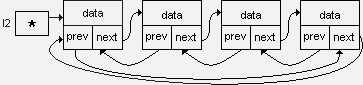
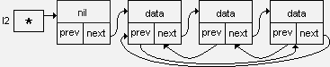

| Тема 5. Двусвязный кольцевой список. | ||
| Назад | ||
|
Двусвязный кольцевой список выглядит так:  Кольцевой список, как и линейный, как единый программный объект идентифицируется указателем, например l2, значение которого - адрес заглавного звена. Возможен другой вариант организации кольцевого списка:  Первый вариант - проще выполняется вставка нового элемента как в начало списка (после заглавного звена), так и в конец - так как вставка звена в конец кольцевого списка эквивалентна вставке перед заглавным звеном. Но каждый раз при циклической обработке списка нужно проверять, не является ли текущее звено заглавным. Второй вариант - проверка текущего звена не требуется, но труднее выполнять добавление звена в конец списка. Для двусвязного кольцевого списка: Операции вставки, удаления, поиска (для первого варианта). При вставке в начало списка (после заглавного звена) нужно указать в качестве pred адрес заглавного звена, то есть указатель на список (l2). Возможность перемещаться по двусвязному списку в каждом направлении позволяет напрямую задавать удаляемое звено его адресом (указателем), следовательно, упрощаются процедуры удаления. Для двусвязного списка возможны различные варианты поиска: от 1-го к N-му, от N-го к 1-му, от 1-го к N-му и обратно, и пр. Для кольцевого списка нужно учесть, что формально последнего звена нет. Единообразие обработки всех звеньев списка, начиная с 1-го до N-го, достигается наличием заглавного звена списка. Его создание для односвязного списка можно осуществить следующим образом:
|
||
| Конспект подготовлен Бакулиным А. М. 2022 год. | ||